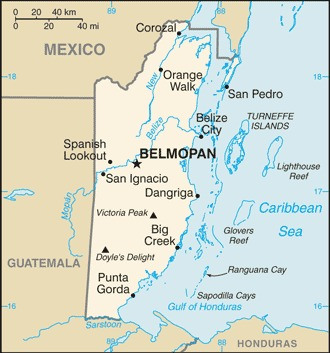

Introduction
Belize was a part of several Mayan City states until their decline at the of the first millenium A.D.
The British and Spanish disputed the region in the 17th and 18th centuries; it formally became the colony of British Honduras in 1862.
Upon their territorial independence in 1981, tourism has been the mainstay keeping the economy afloat.
Geography
Location
Located in Central America between Guatemala and Mexico.
| Total | Land | Water | World Rank by Sq Km |
|---|---|---|---|
| 22,966 sq km | 22,806 sq km | 160 sq km | 152nd |
Climate
Belize has a tropical climate that is very hot and humid, it's known for having a dry season from February to May and a rainy season from May to November.
Natural Resources
- Arable Land Potential
- Timber
- Fish
- Hydropower
Economy
Overview
The country still faces high unemployment numbers and heavy foreign debt. Belize relies heavily on tourism as its the number one foreign exchange earner in this small economy. Followed by exports of sugar, bananas, citrus, marine products and crude oil.
Despite having the third highest per capita income in Central America, the country faces a large disparity between rich and poor. Giving the government a key objective in reducing poverty and inequality.
GDP
| 2017 | 2016 | 2015 |
|---|---|---|
| $8,300 | $8,500 | $8,800 |
| Agriculture | Industry | Services |
|---|---|---|
| 10.3% | 21.6% | 68% |
Transnational Issues
Illicit Drugs
Belize has a major transshipment point for cocaine, a small scale illicit producer of cannabis for local consumption, and an offshore sector of money laundering activity.
Trafficking in Persons
Current Situation
Belize is a transit country for men, women, and children subjected to forced labor and sex trafficking.
The coerced prostitution of women and children by family members has not led to arrest. These harsh acts occur in bars, brothels and nightclubs.
Tier Rating
With a Tier 3 rating, Belize hasn't made any significant efforts to eliminate human trafficking.
Instead of providing assistance to the trafficking victims, they were often arrested, detained or deported based off of immigration violations.